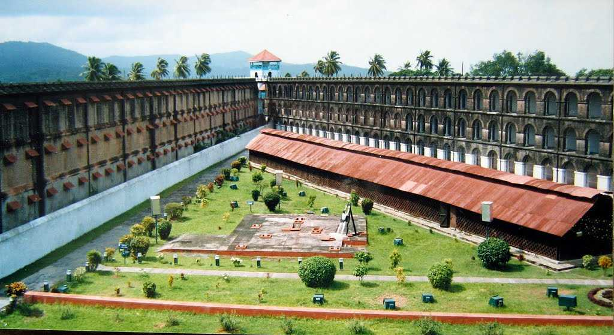
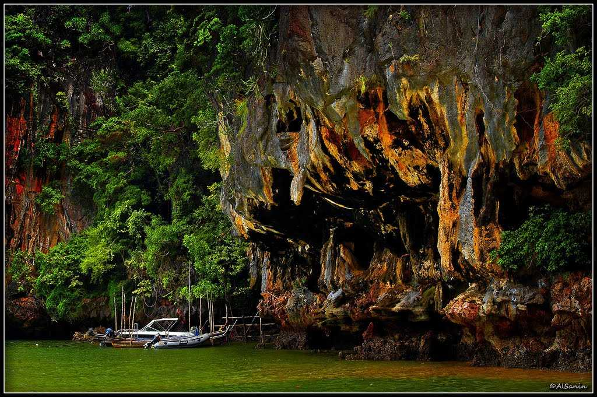
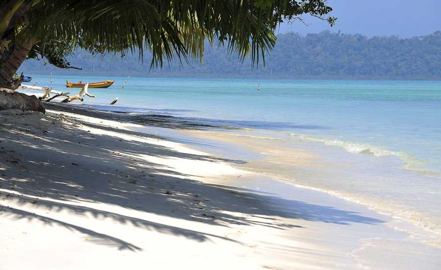

Andaman & Nicobar Islands
Andaman & Nicobar Islands
Pristine beaches, gorgeous corals, fascinating marine life, adventurous water sports and the remain of Stone Age culture draw multitudes of tourists to these islands every year. These islands are covered with lush forests and endless varieties of exotic flora and fauna. Incredible corals and marine life, crystal clear water and mangrove-lined creeks lure travellers to these picturesque islands. while the sandy beaches form as nesting homes to turtles, animals such as spotted deer, wild boar, gecko, crab-eating macaque and python can be spotted in the 86% area still covered by dense forests.
Cellular Jail

The Cellular Jail, also known as 'Kala Pani' is an old colonial prison situated in Port Blair, the capital of Andaman and Nicobar islands. Constructed by the Britishers during their colonial rule in India, Cellular Jail was used particularly to exile political prisoners where they were subjected to many atrocities at the hands of the British. The construction of the jail began in the year 1896 and was completed in 1906, after which it was used to house many notable freedom fighters such as Batukeshwar Dutt, Yogendra Shukla and Vinayak Damodar Savarkar. The jail complex is now owned by the Government of India and it is recognised as the national memorial monument showcasing the life of prisoners during the British period
The jail narrates of the horrifying and darkest period in the history of India. Soon after the Sepoy Mutiny in the year 1857, Britishers began to use the islands of Andaman and Nicobar as the jails to put the independence leaders behind the bars. The secluded islands were chosen due to their distant location from the main parts of the country where the prisoners would be kept in the dark depriving them of the situation in the country and excluding them from the society. During the independence movement of India, thousands of Indians were imprisoned in the cellular jail, many of them died due to inhumane conditions, many were hanged till death and many simply perished. Today, the Cellular Jail is a solemn reminder of all the struggles that our freedom fighters fought through to win the independence of the country, and is an imperative part of our history that ought to be upheld.
Neil Island

The pristine isle of Neil Island in the Andaman Islands of India is located in Ritchie's Archipelago. It is named after James George Smith Neill, a British soldier who had sternly dealt with the insurgents during the suppression of the 1857 mutiny. The tranquil stretch of Neil Island is the perfect destination for a quaint weekend after the hustle and bustle of Havelock Island. What's more, you can also explore the wonders of marine life here through the means of various water-activities and sports. The golden sands coupled with scintillating waters and azure skies is the perfect weekend getaway right in the lap of nature.
The tranquil stretch of Neil Island occupies an area of 18.9 kilometres and can easily be covered over the course of a long evening walk. Perhaps the most endearing feature of this island is its three sand beaches which glisten with golden sand and shimmering waters. The sea is a kaleidoscopic mosaic of light blue, dark blue and green and makes you want to dip your feet right in! Pristine sandy beaches at Sitpur, Bharatpur and Lakshmanpur are some of the best destinations to explore. The breathtaking view of the scenery and the emerald greeneries in the island is really rejuvenating and enjoyable for travellers.
Wandur National Park

The Labyrinth of islands is home to some of the rarest and best coral habitats in the world, inviting people to witness their virgin beauty. Located in the south-western coast of the Andaman Islands, Wandur National Park is a marine life conservation area situated at a distance of 25 km from the capital city of Port Blair. The wildlife sanctuary which is also known as the Mahatma Gandhi Marine National Park consists of a group of 12 islands which are situated geographically in a labyrinthine shape and are home to some of the most exquisite marine wildlife in the world.
The national park and its surrounding areas are like heaven on earth with pristine white sand beaches, clear azure skies and clear water which mesmerize the senses. Covering over 220 sq. km of area the national park is a great place to try some snorkeling and diving in the crystal clear water of the islands giving one an opportunity to see nature's glory from a close view. The coral reefs are the highlight of the park exhibiting their glorious forms and enchanting one and all. The famous islands to visit are Jolly buoy Islands, Redskin Island, Grub Island, Rangat Island, Neil Island and Long Island. The national park can amaze and dazzle everyone visiting especially those who hold wildlife close to their hearts.
Havelock Island

Havelock Island is one of the largest and most popular isles in the Andaman and Nicobar group of islands. Spread over a massive area of 113.93 square kilometres, Havelock Island is situated 57 km north-east of the capital city Port Blair. The island is named after a British General and comprises of Ritchie's Archipelago and a collection of five villages including Shyam Nagar, Vijay Nagar, Radha Nagar, Krishna Nagar and Govinda Nagar. It is one of the most developed islands when it comes to tourism, with a focus on eco - tourism.
The aspect of Havelock Island that draws so many tourists towards itself is its pristine natural beauty and serene atmosphere. A paradise of silky sand beaches, crystal blue water, rich corals and verdant forests, this place is a beautiful manifestation of the region's natural beauty. The southern coast of the island has the charming Radhanagar Beach, while the azure beauty of Vijayanagar Beach is situated towards the east of the island. Elephant beach and Kalapather beach are two other destinations where the sunrise and sunsets are absolutely divine. What's more, you can also indulge in a number of thrilling adventure activities and water sports, and when you're done with that, a long walk along the stretch of the sand is the perfect way to explore the island on your own.